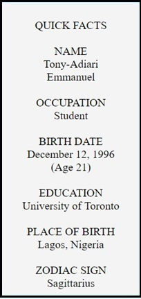
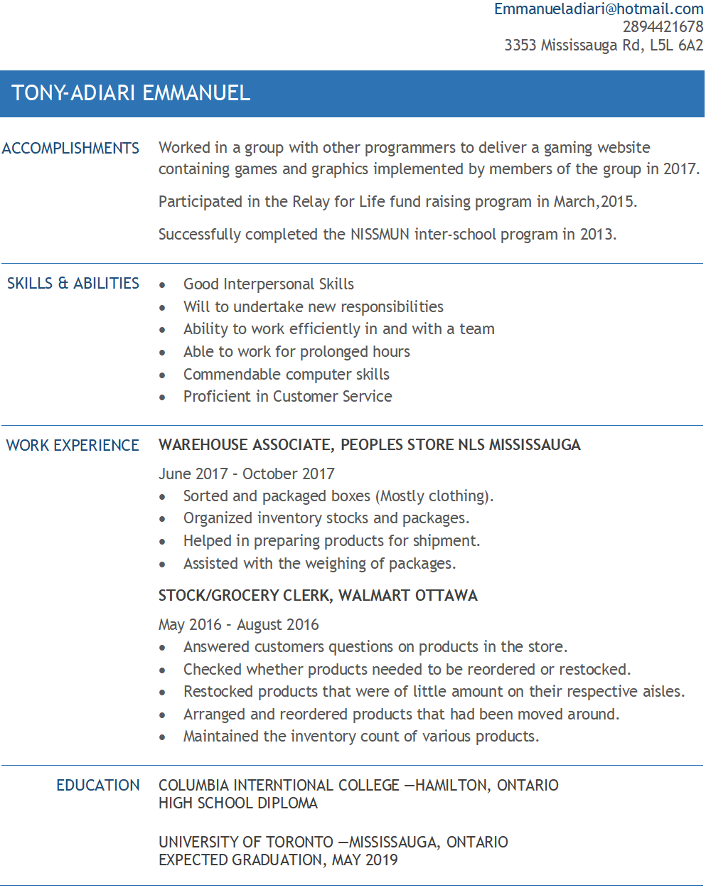

I was born on December 12, 1996 in Lagos, Nigeria. Lagos also being the place I was raised is where I have spent most of my years. I came to Canada in 2014 where I settled into the quiet city of Hamilton before moving into my current location in mississauga. I love to travel, eat, play and make video-games, swim, code programs, and so on. I cannot dance to save my life and I hate summer but love the winter.
I completed my preschool, middle and highschool in Nigeria. I came over to Canada and attended Columbia International College in Hamilton were I mainly focused on Math and Computing courses. Now I am currently enrolled in the University of Toronto situated in Mississauga with a double-major in Communication, Culture, Information & Technology and Computer Science.
My work experience consist of mostly retail jobs such as being a warehouse associate, grocery clerk and so on as can be seen in my resume below. But my coding experience consists of devloping stand alone projects such as games, websites(not this one), kernel programming, e.t.c. Being at these jobs and working on these projects has giving me an insight into the work life and granted me life skills such as diligence, time management, good people skills and so on.
Copyright © 2018 Tony-Adiari Emmanuel